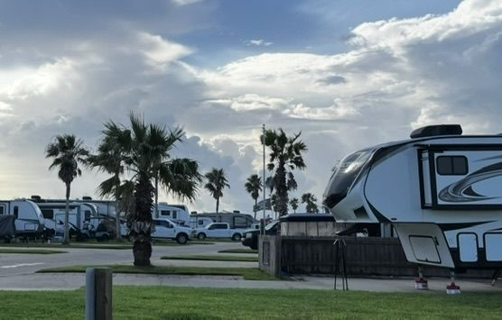

RV SitesRV Sites
All RV sites feature level concrete pads and full hookups, a short walk from our private beach boardwalk.
- 110V, 30-amp and 50-amp full hookups with water and sewer
- Five site types: Standard Back-in, Standard Pull-Through, Premium Back-in, Premium Pull-Through and Grand Sites
- Pull-thru and back-in, all on level concrete
- Wi-Fi and cable options available as a paid add-on